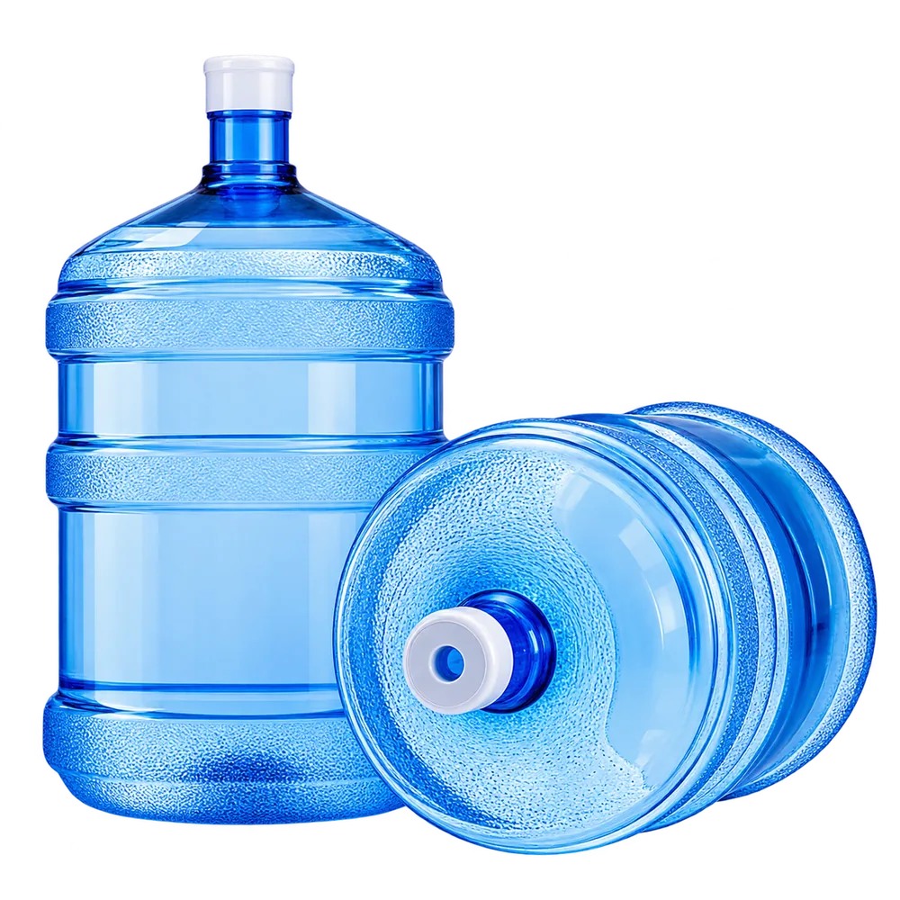

ПЛАСТУНОВСКАЯ · ДИНСКАЯ · УКРАИНСКАЯПитьевая вода
Питьевая вода
с доставкой до двери
Ваши любимые марки воды для дома и офиса. Выбирайте удобный способ получения — доставку или самовывоз.
Принимаем звонки с 08:00 до 20:00

19 лдля дома и офиса
До двери дома и офисаДоставка и самовывозОплата при получении
ВАША ВОДА
Питьевая вода 19 л
Загружаем каталог…
ВСЁ ДЛЯ УДОБСТВА
Все аксессуары →Помпы и оборотная тара

01
Соберите заказ
Вода, новая бутыль или помпа — всё в одном каталоге. Итоговая цена видна сразу.
02
Выберите доставку
Укажите населённый пункт, день и удобный интервал. Мы подтвердим возможность доставки.
03
Встречайте воду
Оплатите при получении. Подготовьте пустые бутыли, если выбрали обмен.
Предпочитаете самовывоз?
В каталоге есть отдельные цены в магазине. Соберите заказ и дождитесь подтверждения.
Выбрать самовывоз →